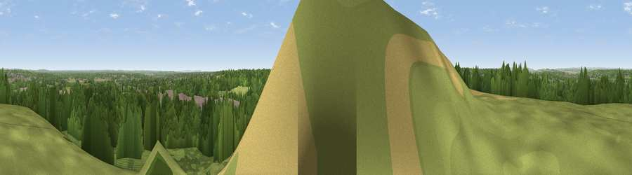

Viewpoint near Merley
#27037 in England · top 44% of its area beats it · near MerleyWhere it is
The exact computed spot (SZ 03175 96925). Click the marker for map links.
The view, rendered

A 360° render of this exact spot computed from the terrain model, tree cover and land cover — summer colours, afternoon light, calibrated against photographs of famous viewpoints. Real trees, hedges and buildings will differ in detail.
The panorama
Grey silhouette: terrain skyline in each direction (720 bearings, Earth curvature and refraction included). Dashed green: skyline with trees (+15 m) and buildings (+8 m) as obstacles. Blue strip: how far the ground is visible on each bearing.
Where the view opens
Wedge length = distance to the farthest visible ground on that bearing (vegetation-aware). Rings at 10, 25 and 50 km.
What fills the view
54% woodland · 26% grassland · 15% built-up · 4% cropland
Angular shares of the visible panorama (visual magnitude), not map area. Landscape diversity 0.50 (0–1 Shannon).
Key numbers
More beautiful places nearby
The staircase of upgrades: each row has a higher view potential than everything closer. Driving times are estimates from straight-line distance, calibrated against real road routing — check an actual route before setting out.
| Place | Direction | Drive | Score |
|---|---|---|---|
| Viewpoint near Merley | SW · 0 km | ~2 min | 50.5 |
| Viewpoint near Poole | S · 5 km | ~10 min | 55.7 |
| Viewpoint near Corfe Mullen | WSW · 5 km | ~11 min | 60.9 |
| Viewpoint near Studland | S · 15 km | ~27 min | 62.6 |
| Viewpoint near Studland | S · 16 km | ~28 min | 82.2 |
| Ballard Down | S · 16 km | ~28 min | 83.2 |
| Viewpoint near Harman's Cross | S · 16 km | ~28 min | 84.1 |
| Viewpoint near Kimmeridge | SSW · 20 km | ~34 min | 86.6 |
50.77190, -1.95634 · source: screening · position refined by local search. Computed location — check access rights before visiting.